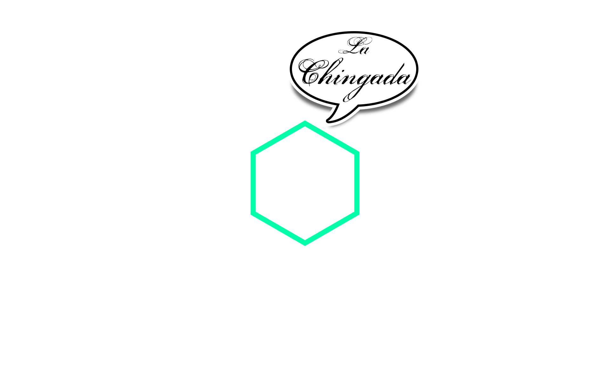
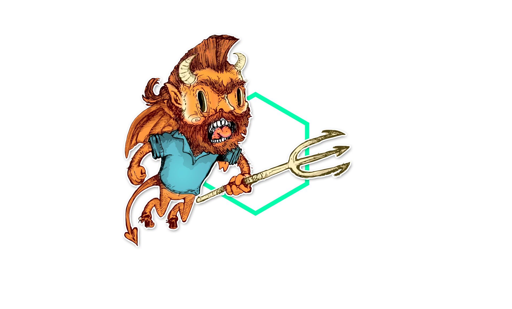
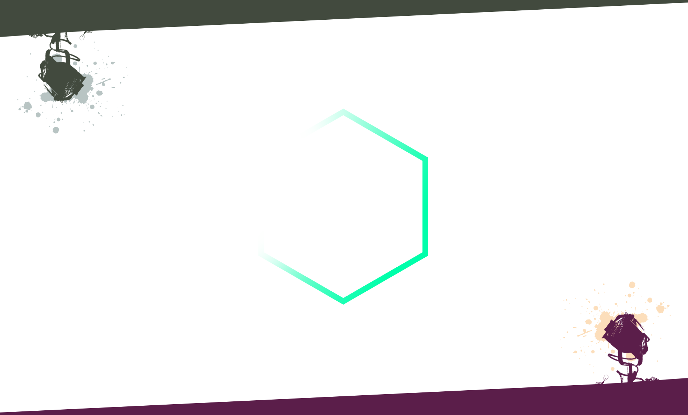

- 
- 
- 
[del verbo "chingar"]
" La Chingada está relacionada con el verbo chingar, también de uso intensivo en México como palabra malsonante. Guido Gómez de Silva remite el origen al español chingar.2 El Diccionario de la lengua española señala que chingar deriva de čingarár, término del caló que tiene el sentido de pelear.3 Por su parte, los autores del Diccionario de nahuatlismos en el español de México lo ubican como un nahuatlismo controvertido, relacionado con la voz náhuatl tzinco ("en el ano"). "
Frases Hechas